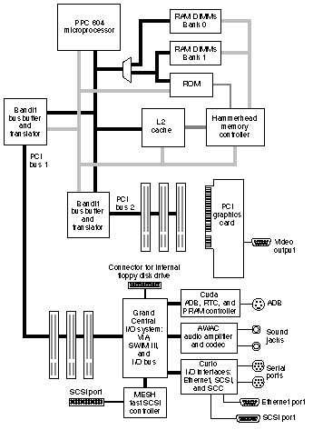

Defining the Device TreeThe device tree is an integral part of the Open Firmware 1275-1994 Specification. The Specification defines the device tree as a hierarchical data structure that describes the system hardware and user configuration choices. It also contains hardware drivers and support routines for use by these drivers. This Technote describes the device tree for the Power Macintosh 9500, which has two AR (Apple RISC) to PCI (Peripheral Component Interconnect) bridge chips called Bandit. Your device tree will look somewhat different than the one described here due to expansion device differences between various machines. Technote 1061, the first in the series, describes how to connect a host machine to a PCI machine and how to generally work with the user interface for those readers who may need an introduction to the interface. Viewing the Device TreeTo view the entire device tree, you make the root node the active package. To display the names of the active packages children, enter dev / ls <CR> at the Open Firmware user interface. Hereafter, I will just use interface to describe the Open Firmware user interface. <CR> means type carriage return.
The first thing to note is that the device tree listing above is a description of the Macintosh 9500 block diagram. Compare the device tree to Figure 1. The device tree also has nodes, such as /chosen@0 and /packages@0 that may not be familiar and are not part of the block diagram. These are utility nodes that supply services. These nodes are described later. Look at the top node in the tree, which is /PowerPC,604@0. This is a full path name and has a format as: /node-name0/node-name1/ .../node-nameN A node name has the following format: node-name@unit-address. In Figure 1, the / in /PowerPC,604@0 is the AR bus (the gray bus), and the PCI bus is the black bus.  Properties and Methods of the Node /Let's look at the properties and methods (i.e., words) of the root node /.
First, I displayed the device-path which made that node the active package, then displayed the properties, and then the words. It is interesting that the root node is / but the name property has a value of device-tree. This is the only case where these names differ. All other nodes will have their node-name and name property values equal. Look at the value of the clock-frequency, which is 0x02FAF080. That value is 50 MHz which is the frequency of the AR bus. Two other interesting properties are #address-cells and #size-cells, both of which have a value of 1. This indicates that the package is a bus node because only bus nodes have these properties. The value indicates the number of cells needed to define a physical address. In fact, #address-cells only applies to packages that define a physical address space such as the AR and PCI buses. #size-cells defines the size of an address which is, in this case, 32-bits. Later, we will see that the PCI bus requires larger values for these two properties. Most of the words for this package deal with address mappings from virtual to physical. decode-unit is an interesting one. Look at the following code and remember it, because I will return to it when we look at the Bandit package:
Decode-unit takes a character string or an address and length from the stack and returns a physical address. In this case, both values are the same since the #address-size is 1. That is, " 3456" is the same as the returned physical address 3456. Section 3.5 of the IEEE Specification names the following standard nodes that a device tree must support.
Other Properties and WordsWe have already looked at /. Here are the properties and words of the remainder.
The aliases properties are hexadecimal values and not human-readable. Also, there are no words, but wait, there's more. Look at the devalias command and what it displayed. This is a list of aliases, in human readable form, to use for long path names. Here are two separate ways to make the node called /pci1234,5678@D the active package:
Look at the two differences in the dev command arguments. The first dev used the full path name and anyone who has made a typing error on a command line, knows that the interface is not very forgiving. So try using the second method, since it's equivalent and easier. Also note that the unit-address, in the case of the second dev command, was used instead of the node-name. The /openprom NodeAnother standard system node is /openprom. Take a look because this node is the ID of the version of Open Firmware on your machine and should be used when submitting Open Firmware questions to Apple Developer Technical Support (DTS).
Other Nodes Attached to the AR BusThe remaining standard system nodes are detailed in the Specification and will not be covered here, so let's move to the three remaining nodes attached to the AR bus. These are the two Bandit ASICs and Hammerhead the memory controller. Here's hammerhead:
Not very interesting except for the reg property. This property along with its side-kick property called assigned-addresses will not be covered in detail in this Technote, but are the only subject of Technote 1044 - Fundamentals of Open Firmware, Part III: PCI Expansion ROM Contents for Mac OS 8. The PCI BusNow let's cross over a bridge chip to get to the PCI bus. Enter this for the first bus.
Now cross over to the second bus by entering this:
Let's take a close look at these two nodes, since they are the same ASIC. Well, their names are the same, so how are they distinguished? By using the unit address. Look back at the devalias command. The first Bandit has a unit address of F2000000 while the second has F4000000. Device type and model are the same but the AAPL,interrupts properties are different. AAPL,interrupts is not mentioned in any documentation and is a private property used to identify one Bandit chip interrupts from the other. Clock-frequency is 1FCA055 hex which is 33 MHz. Slot-names is interesting, since by definition it contains the slots used by Bandit and the labels. However, it looks like hex numbers, so let's decode this property:
I first selected the device and then put the property on the stack. The first item wasn't needed. Look at the stack notation for get-my-property for details. The next item is an bit mask and as such can be rewritten as follows: 1110 0000 0000 0000 = E000 The LSB is 0 and so are all the others until you get to bits D, E, and F which are the unit addresses for the three slots in this Bandit chip. If you decode the other Bandit chip you get this:
Well, the unit addresses are the same, but as you might expect, the labels are different. So this is how to locate the unit address associated with the slot that holds your device. And finally, for the Bandit chip let's explore three properties that deal with address space. Actually, I'll touch on it here, but we go into more detail in Technote 1044 - Fundamentals of Open Firmware, Part III: PCI Expansion ROM Contents for Mac OS 8. Here they are:
Remember, Bandit is a child to the AR bus and a parent to the PCI bus. #address-cells and #size-cells is fixed at 3 and 2, respectively, for PCI but 1 and 1 for AR. That is how you read the ranges property. Let's break up the first entry to make that clearer. (02000000 00000000 F5000000 for PCI) (F5000000 for AR) (00000000 01000000 for size) And this property is encoded as follows. (child-phys parent-phys size) Look at the PCI Bus binding to IEEE specification for details of phys.hi cell, but here is part of it for convenience:
Note bits 24 to 31. These bits show that the address spaces requested are relocatable. Two entries in the range property are for memory space and one is for I/O space. Well, that about covers the device tree down to but not including expansions slots. And as you might expect, your Macintosh does not have the same set of devices in its expansions slots that mine does. A Look at the ATI Card: Its Properties & MethodsLet's take a final look at the ATI card, which you might have. For those of you who don't have this card, here are its properties and methods.
What's DisplayedO.K., let's see what is displayed. Look at the properties vendor-id and device-id, then look at the name property. Notice that they are not equal. That is, the name property is ATY,XCLAIM, not pci1002,4758. This implies two things. The first is that the probing process did not have to declare a name for this device and that a name property was found in the expansion ROM by the probing process. Also note that there is a property called fcode-rom-offset. It tells you that there is FCode in the ROM. Its value is zero, which means there is no offset in the ROM where the FCode resides. It's at the beginning of the ROM. Look at the property called device-type. Its value is display, which is defined in the PCI Local Bus Specification. The device-type property is part of the declaration for this device as is the class-code property. Its value is 0x00030000. From Appendix D of the specification, we see that this class is for display controllers. Width and Height PropertiesLet's look at two more properties called width and height. These show that the boot driver (i.e., Open Firmware) is set for a 13" monitor. Huh, you say? Well, 280 hex is 640 decimal while 1E0 hex is 480 and that is a 13" monitor. Now let's gist the words (methods). These are the words required for a display boot driver. Technote 1044 - Fundamentals of Open Firmware, Part III: PCI Expansion ROM Contents for Mac OS 8 has the details, if you would like to go beyond this Note.
SummaryThis Note, the second in the Open Firmware Technote Series, is intended to get you started with the device tree. Technote 1061 - Fundamentals of Open Firmware, Part I: The User Interface gave you an overview of using Forth and the Open Firmware user interface. Technote 1044 - Fundamentals of Open Firmware, Part III: PCI Expansion ROM Contents for Mac OS 8 provides you with a detailed look at generating or not generating expansion ROM properties for memory allocation. It explains the differences in the assigned-addresses property when the probing process generates your reg and assigned-addresses property due to not finding a name and reg property in your expansion ROM. Downloadables
|